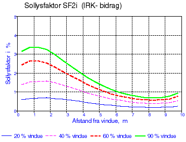
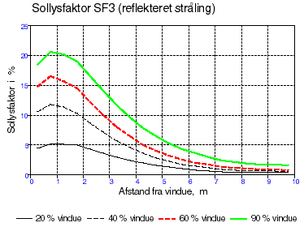
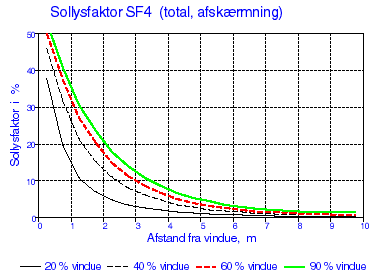

Algorithms for calculation of solar radiation and daylight
From the weather data in the reference year TRY [3], the values for diffuse sky radiation on horizontal, normal radiation (i.e. direct solar radiation at normal incidence), as well as the cloud cover are used. From these values it is possible to calculate the solar incidence on an arbitrarily orientated surface, when the distribution of the sky radiation is known. In the previous tsbi program, version 3, the luminance distribution was assumed to be constant and even over the whole hemisphere at completely overcast, but uneven for a completely clear sky, in accordance with measurements in the USA [Therlkeld, 1962].
More recent measurements, for example in Denmark, [Petersen, 1982] have shown that the radiation from the sky deviates from the above mentioned, and new algorithms have thus been developed for the distribution of the sky radiation, not just for the completely overcast and clear sky, but also for a partly overcast sky. In tsbi5, it is possible to select one of the above mentioned algorithms for the solar radiation, namely via the first tab in the simulation menu, since Lund calculates with the previous algorithms, whilst Petersen calculates with the new ones.
Solar radiation
This solar radiation model described below is the one named Lund on the Options tab of tsbi5. All solar radiation models in BSim are named after their author and described in the following references:
Muneer T. (1989). Algorithms for estimating hourly solar irradiation on slopes. Journal of Building Services, Engineering, Research and Technology 10(2).
Lund H. (1979). Revised splitting procedure for calculation of direct normal radiation and diffuse radiation. Thermal Insulation Laboratory (now BYG*DTU), Technical University of Denmark, Lyngby, DENMARK.
Perez
Petersen E.
The total solar incidence on a surface can be regarded as consisting of three contributions, namely:
direct solar radiation (from the sun)
radiation from the sky (diffuse sky radiation)
reflected radiation from the surface of the ground
Especially the diffuse sky radiation is described differently in the algorithms mentioned. This form of radiation is just called the sky radiation in the following, in contrast to the direct solar radiation from the sun.
The sky radiation on a sloping surface Ef can be expressed in comparison with sky radiation on the horizontal Ev, with a factor f:
\[ E_f = f \cdot E_v \tag{1} \]
The factor f is dependent on the orientation of the surface, in comparison to the sun (angle of incidence) and whether the sky is overcast or clear and the degree of cloud cover. The cloud cover N is defined in integers (from 0 to 8), where 0 denotes a completely clear sky and 8 denotes a completely overcast sky.
The following is valid for a surface with an arbitrary slope:
\[ E_f = \frac{f_{oc} \cdot 1.5 N + f_{cl} \cdot (8-N)}{0.5 N + 8} \cdot E_v \tag{2} \]
where
N is the cloud cover
foc and fcl are factors for the contributions from the overcast and the clear parts.
For a surface with a slope of γ compared to the horizontal, these factors can be calculated from the following expression, which is dependent on the angle of incidence i.
for cos i \( < \) 0
\[ f_{oc} = \left( 0{,}42 + 0{,}6 \cdot \cos i \cdot \frac{(8 - N)}{8} \right) \cdot (1 - \cos \gamma) + \cos \gamma \tag{3} \]
\[ f_{cl} = \left( 0{,}65 + 0{,}1 \cdot \cos i \right) \cdot (1 - \cos \gamma) + \cos \gamma \tag{4} \]
for cos i \( \ge \) 0
\[ f_{oc}= 0{,}42 \cdot (1 - \cos \gamma) + \cos \gamma \tag{5} \]
\[ f_{cl} = \left( 0{,}65 + 0{,}2 \cdot \cos i + 0{,}45 \cdot \cos^2 i \right) \cdot (1 - \cos \gamma) + \cos \gamma \tag{6} \]
The direct solar radiation and sky radiation reflected from the surface of the earth are calculated from:
\[ E_\gamma = 0.5 \cdot (1 - \cos \gamma) \cdot \rho \cdot E_g \tag{7} \]
where
ρ is the reflectance of the ground's surface
Eg is the global radiation on horizontal (direct solar radiation and sky radiation).
Daylight
The solar radiation can be converted to daylight when the luminous efficiency of the radiation is known. The three radiations are differentiated, and according to [Petersen, 1982] are reckoned to have the following average efficiencies:
Direct sun KD = 103 lm/W
Overcast sky Koc = 121 lm/W
Clear sky Kcl = 146 lm/W
For the reflected radiation, it is assumed that the luminous efficiency is not changed by reflection. In BSim the standard value for reflectance of sunlight from the surface of the ground is 0.1, corresponding to a field of grass, as the reflectance in the visible area is normally significantly less than the for the whole solar spectrum. In cases with lighter surfaces, e.g. snow, the reflectance can be altered.
Illumination of a space by daylight
The illuminance in a point of a room is dependent on the point's position. As a reference is often used the illuminance on a horizontal working plane 0.85 m above the floor.
As the illuminance outside the window varies from one moment to the next, it is practical to denote the illuminance at a point within the room as a relative size in comparison with the illuminance outside. Normally the daylight factor DF is used to describe this relation, defining DF as the illuminance in the point divided by the illuminance outdoors, measured simultaneously on horizontal and illuminated by the whole hemisphere. The sky's luminance distribution can either be expressed as a CIE-sky or as having a uniform, even luminance distribution. Direct sunlight is disregarded.
By definition the daylight factor thus becomes independent of which direction the window faces. This daylight factor is therefore used for determination of minimum values which occur on overcast days, whilst it is not suited for energy calculations or for control of the artificial lighting.
The relative illuminance in the room must therefore be expressed in comparison to the actual light incidence on the window. In order to avoid confusion about the concepts, this factor is called solar light factor SF.
Solar light factors
The solar light factor SF at a point on a given plane is therefore defined as the ratio of the illuminance at the point to the illuminance outdoors on the surface of the facade, without any shadows. The illuminance at a point cannot be described by a single value of the solar light factor, but must be divided into different contributions as follows:
SF1 the solar light factor for direct sunlight (direct light)
SF2 the solar light factor for light from the sky (diffuse light from the firmament)
SF3 the solar light factor for reflected light
SF4 the solar light factor for the window, when this is equipped with sunshades.
In BSim, when selecting glazing, a factor will always be included for reduction of solar radiation and daylight, respectively. The calculated solar light factors for a "pane" with a transmission factor of 1.0 must therefore be used.
SF1
The direct sunlight will give a bright spot somewhere in the room, and the reflected light from this spot will act like a source of light. As the position of the spot is extremely dependent on the sun's height and azimuth, SF1 at the point will be far from constant. The intention of the calculations is, however, to obtain a single value which is representative for SF1. At the point which is struck by direct radiation, there will be a very high light source which, however, is disregarded during the calculation of SF1, as only the inter-reflected component is included.
Determination of SF1 for the un-shaded window is normally not critical in connection with control of the artificial lighting, because the remaining daylight contribution in this situation gives such a high illuminance that artificial lighting is unnecessary. In a working situation, the direct sunlight in the room will often result in the sun-shading being drawn for one or more windows.
SF2
SF2 normally gives the largest contribution to the luminance at a point which can "see" the sky. During the calculations it is assumed that, regardless of the sky's condition (overcast or clear), that the luminance distribution is the same as a CIE-overcast sky or uniform cloudy, and SF2 is calculated according to one of these two conditions. The amount of incident light is calculated according to algorithms previously mentioned [Petersen, 1982].
SF3
SF3 is the contribution from reflected radiation from the ground and including both radiation from diffuse sky radiation and direct sunlight. Completely diffuse reflection from the ground is assumed. The reflected contribution is characterized by the fact that the light must first strike other surfaces in the room, especially the ceiling, before it can reach the point.
SF4
When sun-shading is used and the light is "diffused" after passing through the sun-shading, SF4 is used for the sun-shading. SF4 is indicated, like the remaining solar light factors for a window with a transmittance of 1, as transmission factors are included in data for window and sun-shading.
Determination of the solar light factors SF1 - SF4
The light which strikes a point consists of two contributions, namely:
The direct component which consists of that part of the light which comes directly to the point from the source of illumination, e.g. the sky or the shading.
The inter-reflected component IRC, which consists of that part of the light which is first reflected one or more times from other surfaces, before it strikes the point.
The solar light factors can in certain cases be calculated by computer or determined by more or less accurate methods or possibly by measurements in existing buildings. Only the contribution from diffuse sky radiation and reflected light is included in manual methods for daylight factors.
BRS-protractors are the method most used to determine the direct contribution [Longmore, 1967]. The inter-reflected light contribution (IRC) is normally calculated by means of the BRE split flux method [Hopkinson, 1966]. This indicates a calculation expression for the average value of the inter-reflected light contribution to the working surface. The value will be greater at the window zone and less further back in the room, and corrections for determination of the maximum and minimum values can be calculated from the average value by multiplying this by a factor as indicated in the tables f.13.
With normally used window sizes and room dimensions, general, indicative values can be given for the solar light factors, but with special facade forms, determination will often be subject to excessive uncertainty, and the solar light factors must be calculated in another way.
Determination of solar light factors from an example
In the following, formulas are given for calculation of the solar light factors for the inter-reflected contributions to SF1-SF4, and here, curves are shown both the direct contributions, for the inter-reflected contributions as well as for the total factors, from which normative values for the four solar light factors can determined.
As an example, consider a room with a facade of 4 m x 2.8 m and a window with a glazed area of 20 %, 40 %, 60 % and 90 % of the internal facade area. The room's depth is 6 m. Reflections from the ceiling, walls and floor are 0.7, 0.4 and 0.1, respectively. The solar light factors are calculated at a point on a horizontal surface 0.85 m above the floor and on the room's middle axis, at right angles to the facade.
A pre-requisite for using the curves is primarily that the windows, for which solar light factors are indicated in BSim are more or less evenly spread over the room's facade(s). If there are several windows in the same facade, it must be decided whether the solar light factors for one window must (or can) represent all the windows in the facade, or whether factors must be indicated for the individual windows.
Direct sunlight SF1
The average value of the inter-reflected contribution to SF1 can be calculated from:
\[ SFI = \frac{0{,}72 \cdot G \cdot R_f}{A(1-R)} \tag{8} \]
where:
G is the area of glass
Rf is the reflectance of the surface which the direct sunshine strikes (the floor)
A is the area of the room's limiting surfaces
R is the average reflectance for the room's surfaces, weighted according to areas.
The variation of SF1 in the room will be very dependent on where the light source is situated. The example assumes an angle of incidence of 45° on a horizontal surface at right angles to the window. The variation of SF1 appears in principle as shown in f.1, but it must be noted that only the inter-reflected part of the direct radiation has been included.

The variation of SF1 as a function of the depth of the room is shown in Figure f.2 for window areas comprising 20% (lowest curves) and 90% of the facade (upper curves).
It is apparent that the factor SF1 is increased slightly in smaller rooms, but the variation is comparatively little. It must be noted that the direct sky radiation in the calculations is assumed to strike the floor. Under this assumption, the solar light factor is directly proportional to the floor's reflectance, which is set to 0.1 in the calculations. With higher levels of reflectance, SF1 can thus be calculated directly by multiplying the value shown by the actual reflectance divided by 0.1.

Diffuse sky radiation SF2
According to the definition of the solar light factor, there is the following connection between SF and the daylight factor DF:
\[ SF = \frac{E_v}{E_f} \cdot DF \tag{9} \]
where:
Ev is the illuminance on the horizontal plane
Ef is the illuminance on the window surface
If the daylight factor for sky radiation, DF2 is known, then SF2 for the CIE-overcast sky is calculated from the following:
\[ SF2 = DF \frac{2}{0{,}42 (1- \cos \gamma)+\cos \gamma} \tag{10} \]
whilst for the evenly overcast sky it is determined by:
\[ SF2 = DF \frac{2}{0{,}50 (1- \cos \gamma)+\cos \gamma} \tag{11} \]
If the daylight factor DF2 is not known, then SF2 can eventually be determined as the sum of the direct contribution and the inter-reflected contribution:
\[ SF2 = SF_{2d} + SF_{2i} \tag{12} \]
The direct contribution SF2d varies considerably depending on the distance from the window, as shown in f.2. and f.4. The solar light factor for the direct contribution of the sky radiation, SF2d becomes very high, close to the window, and comprises the greatest contribution to the daylight here. The figures show the same curve, as the scale in f.4 has been changed, so that the daylight factor further back in the room can be determined.


It can be seen that the difference between the solar light factors at 60 % and 90 % is minimal, which is because the increased window area lies below the level of the work surface.
The average value for the inter-reflected contribution SF2i can be determined by:
\[ SF_{2i} = \frac{0{,}9 \cdot G \cdot R_N}{A(1-R)} \tag{13} \]
where:
G is the area of glass
RN is the average reflectance of the surfaces of the room, lying below a level through the middle of the window (with the exception of the full length window)
A is the area of the room's limiting surfaces
R is the average reflectance of the room's surfaces, weighted according to areas
The minimum value for SFi can be calculated with the correction factors in the table f.13.
For the example chosen, the variation of SF2i is shown in f.5.

Total contribution to SF2. The solar light factors for light from the sky, SF2, for the sum of the direct contribution and the inter-reflected contribution are shown in 6 as a function of the window area and for room depths of 6, 8 and 10 meters.
The uppermost curve in the figure shows the solar light factor SF2 for a room with a window area of 90 % of the facade, whilst the lowest curve shows SF2 for a room with a 20 % window area. The curves for the 3 room depths finish at distances from the window of respectively 5.75 m, 7.75 m and 9.75 m. It must be noted that the solar light factors become somewhat higher with less deep rooms, especially at the back of the room. This is because the inter-reflected light becomes more "concentrated" here, or it is spread over a smaller total area of surfaces.
The solar light factors are in all cases calculated at a point on a horizontal surface 0.85 m above the floor, on the room's middle axis, at right angles to the window facade. The reflectance of the room's surfaces are 0.7 for the ceiling, 0.4 for the walls and 0.1 for the floor.

Reflected light SF3
As normally only reflection of radiation from the earth's surface (or horizontal surface outside the windows) is reckoned with, this contribution contains only the inter-reflected contribution. The average value for this contribution, SF3 can be determined by:
\[ SF3 = \frac{1{,}5 \cdot G \cdot R_ø}{A (1-R)} \tag{14} \]
G is the area of glass
RØ is the average reflectance of the surfaces of the room, lying above a level through the middle of the window (with the exception of the full length window)
A is the area of the room's limiting surfaces
R is the average reflectance of the room's surfaces, weighted according to areas
If the minimum value for SF3 is wanted, the average value of the inter-reflected contribution is corrected by means of the reduction factor indicated in table f.13.
The variation of SF3 with room depth and window size is shown in figure f.7 and f.8.


Light from sun-shading SF4
The light from sun-shading gives a direct contribution and an inter-reflected contribution.
\[ SF4 = SF{4d} + SF_{4i} \tag{15} \]
The direct contribution, SF4d depends significantly on the distance from the window, as shown in f.9.

The average value for the inter-reflected contribution SF4i, can be determined by:
\[ SF_{4i} = \frac{1{,}35 \cdot G \cdot R}{A (1-R)} \tag{16} \]
G is the glass area
A is the area of the room's limiting surfaces
R is the average reflectance for the room's surfaces, weighted according to areas.
If the minimum value of SF4i is desired, and thus SF4, the average value is corrected for the inter-reflected contribution by means of the correction factor indicated in table f.13.
For a 10 m deep room, the variation in SF4i is shown in f.10.

Total contribution to SF4
The total contribution to the daylight from a diffusing sun-shading is shown in 11 for a 10 m deep room and in 11 for varying room depths and the window sizes 20 % and 90 % of the facade area.


Maximum and minimum values for the IR-component
In the table below some guiding factors are given by which the average IRC-value must be multiplied, in order to give the maximum value in the window zone and the minimum value in the zone by the back wall, as a function of the room's depth.
Factors for calculating maximum and minimum values of the IR-component to SF-factors
| Solar light factor | 6 m (max) | 6 m (min) | 8 m (max) | 8 m (min) | 10 m (max) | 10 m (min) |
|---|---|---|---|---|---|---|
| SF1 | 1,4 | 0,50 | 1,7 | 0,27 | 2,1 | 0,13 |
| SF2 | 1,5 | 0,75 | 1,8 | 0,50 | 2,1 | 0,35 |
| SF3 | 1,8 | 0,40 | 2,3 | 0,25 | 2,5 | 0,17 |
| SF4 | 1,5 | 0,50 | 2,0 | 0,33 | 2,5 | 0,22 |
Table f.13. Guiding factors for determination of maximum and minimum values of the inter-reflected contribution to the four solar light factors. Distances refer to room depth.
Other corrections
In the tsbi5 calculation, automatic correction is made for the transmission loss in the glass and possible reduction of solar incidence due to shadows from the surroundings or from building projections and such like.
Additional correction must be made for window bars and other objects, for which no allowance is made when the size of the glass area is indicated.
Likewise, correction should be made for dirt on the window, which reduces the solar incidence. The reduction factor is dependent on the surroundings (in the country or an industrial town), and type of work carried out in the room. Normally the following reduction factors are used:
| Room's siting | Type of work | Correction factor |
|---|---|---|
| Country areas | Clean | 0,9 |
| Country areas | Dirty | 0,7 |
| Outer suburbs | Clean | 0,9 |
| Outer suburbs | Dirty | 0,7 |
| Housing areas | Clean | 0,8 |
| Housing areas | Dirty | 0,6 |
| Industrial areas | Clean | 0,7 |
| Industrial areas | Dirty | 0,5 |
Table f.14. Reduction of the daylight determined on the basis of the solar light factors.